Clip 1 of a battleship film, 15 s widescreen: on the bridge of the Resolute, the lookout spots an enemy cruiser on the horizon and points it out, Captain Vale raises her binoculars to confirm, the small tactical screen tracks the vessel, and Vale lowers the binoculars and gives a clear command to fire. Captain Vale: cropped dark hair, navy double-breasted coat, brass binoculars. Lookout: young man, curly black hair, navy sailor shirt, red headset. Helmsman: woman, blond braid, navy sailor shirt, rolled sleeves. Bridge: narrow steel, slanted front windows, central chart table, cool overhead lamps.
V3 · image-to-video from the premade still · ltx-2.5 · 2 attempts · 720 credits
reference given:
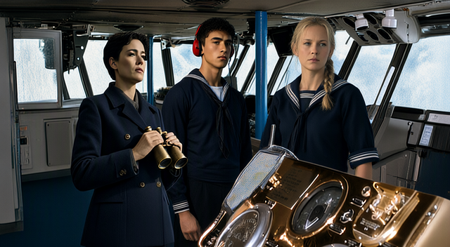
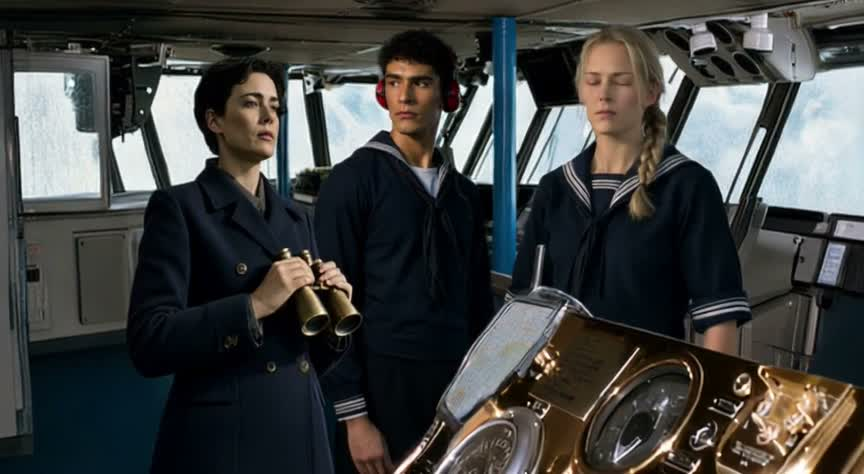
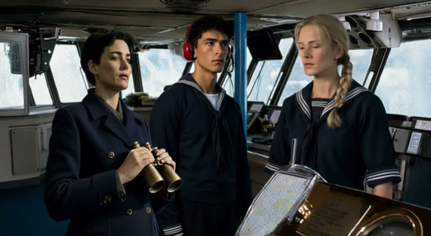
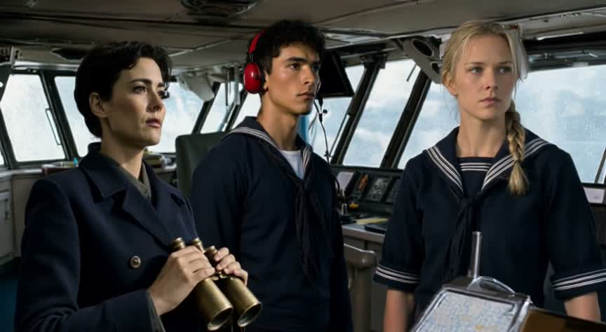
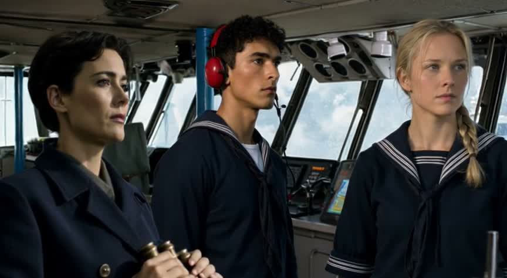
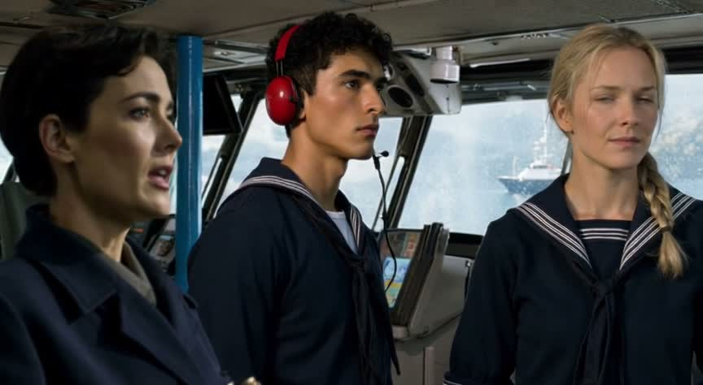
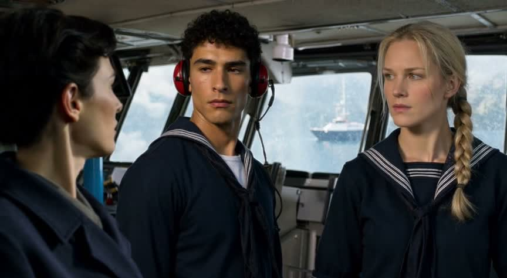
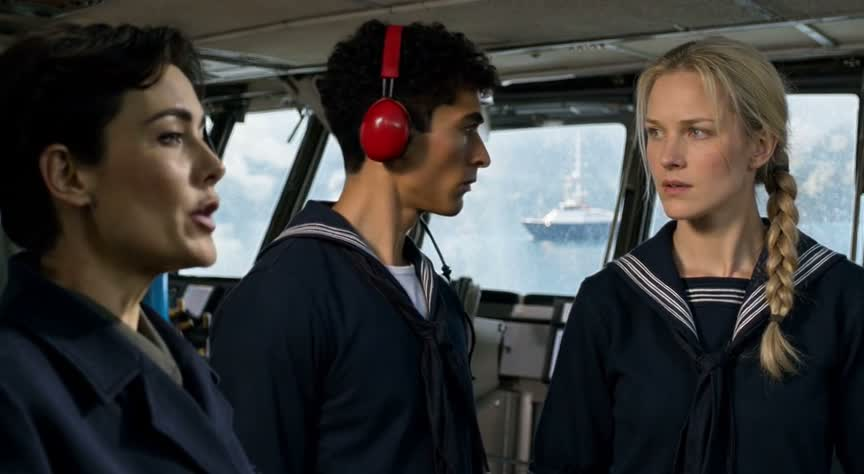
Visually convincing and largely consistent crew and bridge staging are undermined by the missing spotting-and-binoculars sequence, unverified fire command, and weak tactical-screen coverage.
| partly | The three crew match their descriptions and stay the same people throu… All three retain consistent identities; Vale has cropped dark hair, a navy double-breasted coat and brass binoculars, and the lookout has curly black hair and a red headset. The helmsman has a blond braid and navy sailor shirt, but her sleeves are not visibly rolled. |
| partly | The bridge is narrow steel with slanted front windows, a chart table a… The cramped metal bridge, slanted windows and surrounding fixtures remain spatially coherent. The foreground object reads as an instrument console rather than a central chart table, and cool overhead lamps are not clearly established. |
| no | The lookout points at the horizon, Vale raises binoculars, then lowers… No sampled frame shows the lookout pointing or Vale looking through raised binoculars; she holds them below her face. Her later open mouth suggests speech but cannot establish a clear fire command. A vessel appears outside, but the requested discovery-and-confirmation sequence is absent. |
| partly | A small tactical screen with amber graphics is visible on the bridge.… Small console displays are visible, including a multicoloured map-like screen and an amber indicator, but no clearly identifiable amber tactical display tracking the vessel is shown. |
| partly | Cold late-afternoon window light; about 15 seconds; widescreen 16:9; n… The frames are approximately 16:9, show cool daylight and contain only the same three crew without duplication. Late afternoon is not visually established, and the supplied samples do not independently verify the full duration. |
Inside the Resolute's bridge, create 15 seconds matching the source image. Preserve identities and stations: Vale—cropped dark hair, navy double-breasted coat, brass binoculars; lookout—curly black hair, navy sailor shirt, red headset; helmsman—blond braid, navy sailor shirt, rolled sleeves. Keep the narrow steel bridge, slanted front windows, central chart table and cool overhead lamps. Keep the small square tactical screen with a thick black bezel and amber graphics. Retain cold late-afternoon light. One continuous medium three-shot with one very slow push toward the faces. 0–3 seconds: continuing the starting poses, the lookout spots a tiny pale-gray cruiser with one raked funnel and a white stripe across its bow on the distant horizon through the glass; his eyes sharpen. 3–6 seconds: he points through the glass, meeting Vale's eyes to direct her attention. 6–9 seconds: Vale confirms through raised lenses along his pointing line; the helmsman watches her expectantly. 9–12 seconds: the amber contact marker tracks steadily; Vale's gaze drops toward it, her expression certain. 12–15 seconds: Vale faces the crew and gives the firing command with controlled authority; finish in a stable medium three-shot on their faces, holding the final two seconds. Audio: low engine hum and bridge creaks; lookout, 1–2 seconds: "Enemy cruiser!" Vale, 12–13 seconds: "Fire main battery!" Realistic naval-war-film photography, steel-blue shadows, restrained saturation, controlled tension. Sequence 1 of 3: end on the order; no gunfire yet, no subtitles or overlays.
V3 · image-to-video from the premade still · ltx-2.5 · 2 attempts · 720 credits
reference given:
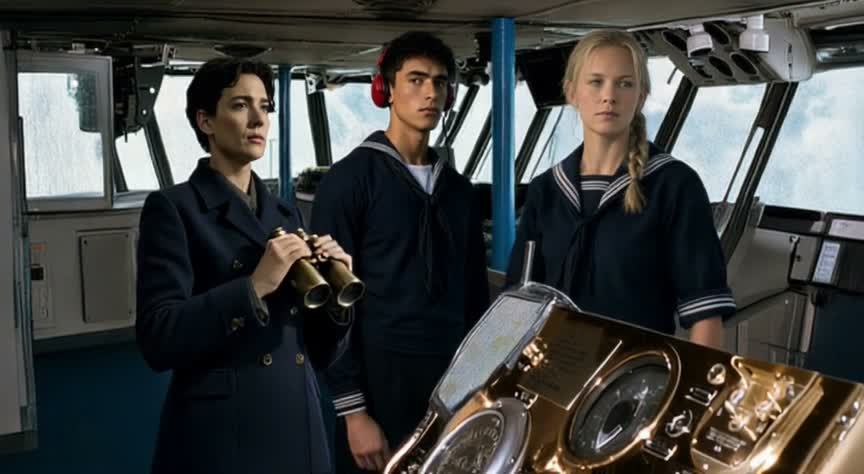
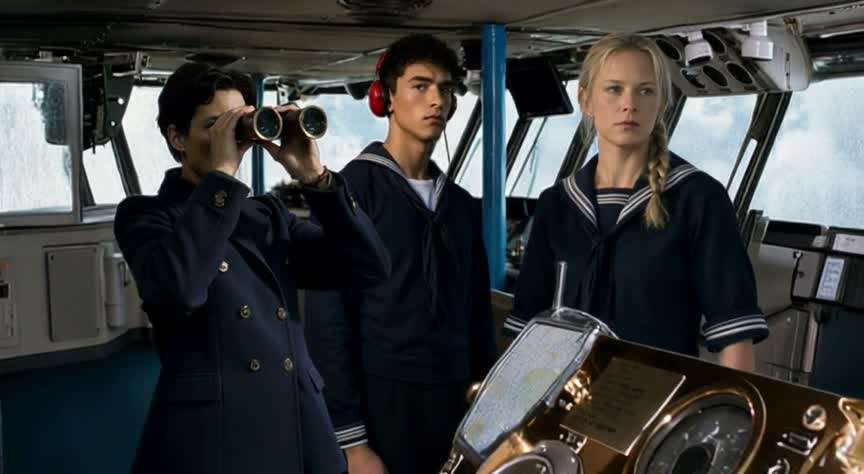
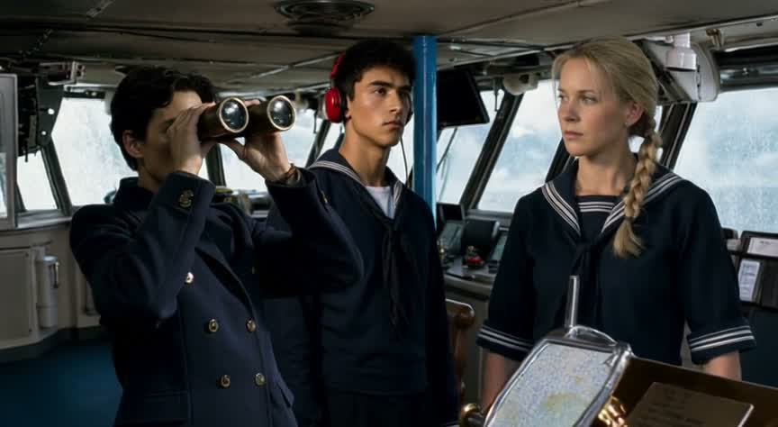
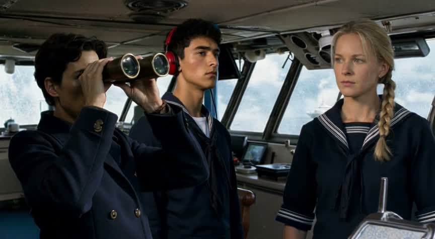
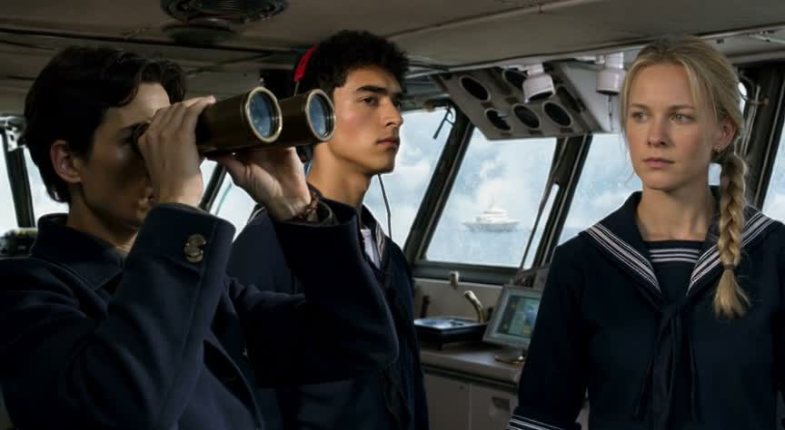
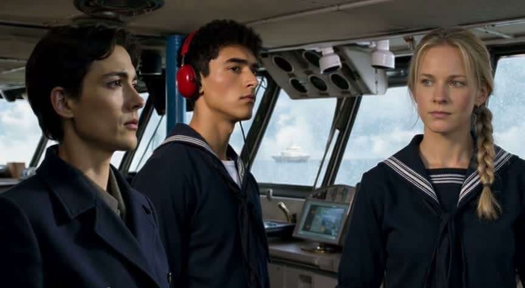
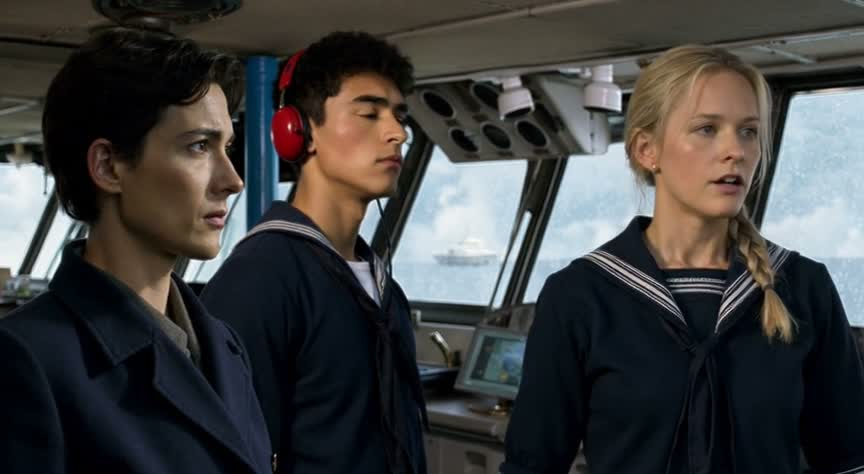
Visually coherent crew and bridge staging support Vale’s binocular check, but the missing lookout gesture, unconfirmed fire command, and absent amber tracking graphics leave the central story incomplete.
| partly | The three crew match their descriptions and stay the same people throu… Faces and identities remain consistent; Vale has cropped dark hair, a navy double-breasted coat and brass binoculars, and the lookout has dark curly hair and a red headset. The helmsman has a blond braid, but her sleeves look cuffed rather than rolled. |
| partly | The bridge is narrow steel with slanted front windows, a chart table a… The cramped metal bridge, slanted windows and overhead fixtures remain coherent. A chart-like surface appears on the foreground console, but a distinct central chart table and illuminated cool overhead lamps are not clearly established. |
| partly | The lookout points at the horizon, then Vale raises binoculars, lowers… Vale raises the binoculars by 3 seconds and has lowered them by 11 seconds. No lookout pointing gesture is shown, and the frames do not establish a clear fire command from Vale; the helmsman is more visibly speaking at 13 seconds. |
| partly | A small tactical screen with amber graphics is visible on the bridge.… Small screens are visible behind the crew, but their displays appear blue-green rather than amber, and vessel tracking is not legible. |
| partly | Cold late-afternoon window light; about 15 seconds; widescreen 16:9; n… Cool cloudy daylight, approximately 16:9 framing and exactly three unduplicated crew are evident. Late afternoon is not identifiable, and the supplied frames through 13 seconds cannot independently confirm the full runtime. |
Create a 15-second naval-war-film scene inside Resolute’s narrow steel bridge, matching the source image. Use the supplied image as the starting frame and strict visual reference: preserve Captain Vale at left with swept-back dark hair, navy double-breasted coat and brass binoculars; the young male lookout in the centre with short black hair, striped navy sailor uniform and red ear protectors; and the female helmsman at right with a blonde braid and striped navy sailor top. Preserve the slanted windows, blue supports, brass instrument console and cool daylight, with restrained steel-blue shadows. One continuous shot keeps the same people, clothing and bridge geometry throughout. 0–3 seconds: begin with the exact source framing, Vale’s binoculars at chest level; she raises them to her eyes to study the horizon, with a slow camera push past the polished console. 3–6 seconds: in the medium three-shot, the lookout points through the glass, eyes fixed outward; a gentle lateral slide reveals a tiny pale-gray cruiser far away on the slate-blue horizon, one raked funnel and a white bow stripe barely discernible. 6–9 seconds: medium framing on Vale, she lowers the binoculars to her chest with a look of recognition; the camera eases closer, cool window light across her face. 9–12 seconds: medium three-shot, Vale looks toward the crew and firmly says, “Fire main battery!”; continue the subtle push, the lookout attentive and the helmsman maintaining her position at the console. 12–15 seconds: settle on all three serious faces and the binoculars at Vale’s chest, no new action, ending in a stable three-second hold. Audio: subdued engine vibration, faint wind outside and the single dry, authoritative command at 9–12 seconds; no music. Restrained cinematic colour and deliberate pacing. No subtitles, overlays or additional dialogue. Clip 1 of 3: end on the order and its tense aftermath; no guns firing or exterior salvo, which belongs to the next clip.
MCP · create video from image · ltx-2.5 · audio on · 360 credits · 78 s
reference given:
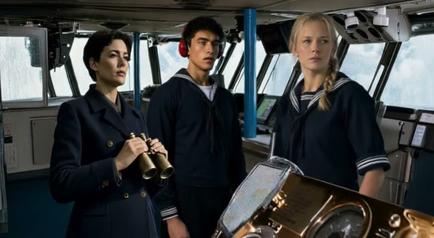
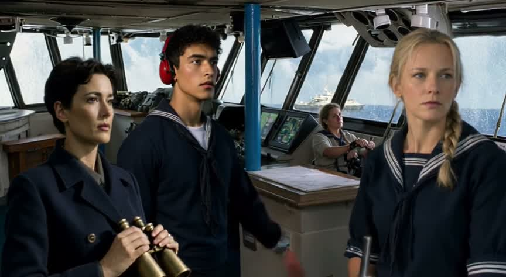
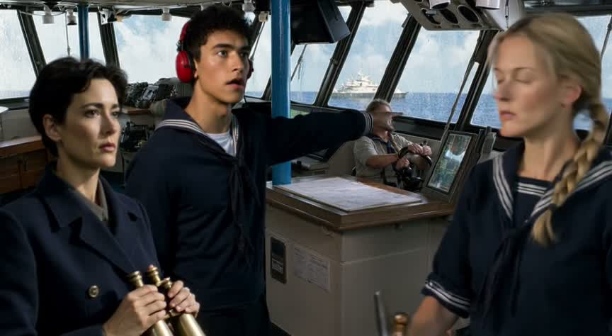
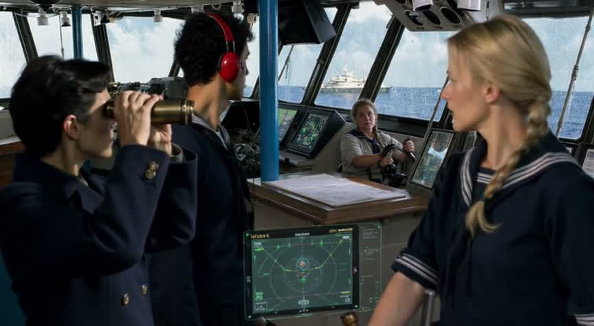
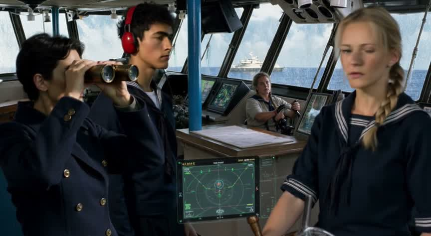
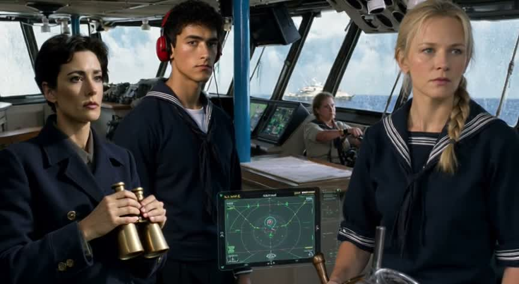
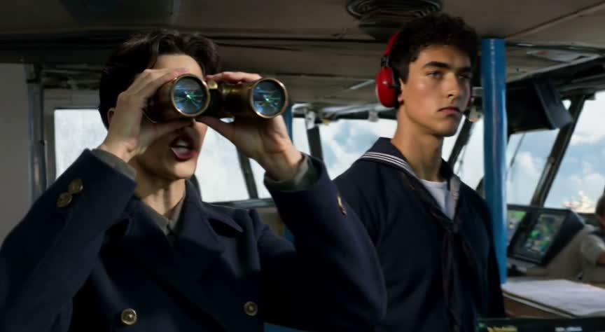
A visually coherent bridge scene preserves the main cast and much of the spotting sequence, but an extra crew member, green rather than amber graphics, and an unclear fire-command ending prevent full delivery of the brief.
| partly | The three crew match their descriptions and stay the same people throu… Vale consistently has cropped dark hair, a navy double-breasted coat and brass binoculars; the lookout has curly black hair and a red headset. The blond, braided woman remains consistent, but her sleeves appear short rather than rolled, and another person occupies the helm. |
| yes | The bridge is narrow steel with slanted front windows, a chart table a… The cramped metal interior, slanted windows, central chart table and overhead fixtures remain spatially consistent across the frames. |
| partly | The lookout points at the horizon, Vale raises binoculars, then lowers… The lookout points at 5 seconds, Vale uses binoculars at 7–9 seconds and lowers them by 11 seconds. At 13 seconds she has raised them again; her open mouth suggests speech, but the frames do not establish a clear command to fire after lowering them. |
| partly | A small tactical screen with amber graphics is visible on the bridge.… A small radar-style tactical display is clearly visible, but its graphics are predominantly green/cyan rather than amber; tracking the distant vessel is not established by the stills. |
| partly | Cold late-afternoon light; about 15 seconds; widescreen 16:9; no extra… The frames are approximately 16:9 and show cool daylight, though late afternoon is not clear and exact duration cannot be verified from samples ending at 13 seconds. An additional seated crew member appears from 3 seconds onward; no obvious crew duplication is visible. |
[create_video_from_image · ltx-2.5] 15-second cinematic realistic naval battleship film, widescreen 16:9, one continuous bridge scene starting from the supplied reference. Preserve the exact three pictured crew identities, facial features, hair, clothing and relative positions throughout: Captain Vale at left, adult woman with cropped dark hair, navy double-breasted coat, brass binoculars; lookout at center, young adult man with curly black hair, navy sailor shirt, red headset; helmsman at right, adult woman with blond braid, navy sailor shirt and rolled sleeves. Preserve the reference bridge architecture and instrument console: narrow steel bridge, slanted front windows, central chart table, cool overhead lamps, daylight sea outside. No additional crew, no identity swaps, no wardrobe changes. 0–4 seconds: lookout notices a distant enemy cruiser through the forward windows, points toward the horizon and says urgently, clearly, 'Enemy cruiser on the horizon!' 4–8 seconds: Captain Vale raises her brass binoculars to her eyes to confirm the sighting. Helmsman remains at her station, alert, hands operating helm. 8–11 seconds: a small tactical screen integrated in the existing console shows a simple radar track of the distant cruiser, a single moving vessel marker, restrained green radar graphics, no elaborate text. Keep all three people consistent and in scene. 11–15 seconds: Vale lowers the binoculars, faces forward with decisive composure and commands clearly and audibly, 'Main battery, open fire!' Finish on her firm expression. One very slow smooth camera push-in, natural anatomically correct hands and binocular handling, restrained ship sway, realistic motion. Sound: low engine rumble, subtle bridge machinery, quiet sea wind, clear synchronized English dialogue. No music, no subtitles, no cuts, no firing before the final command.